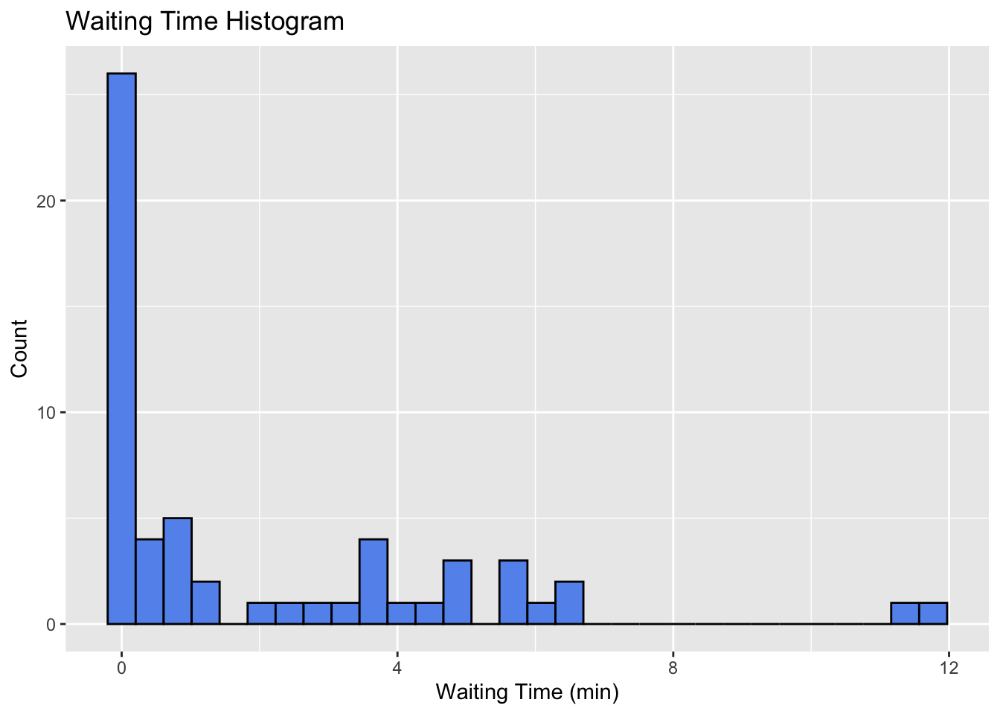
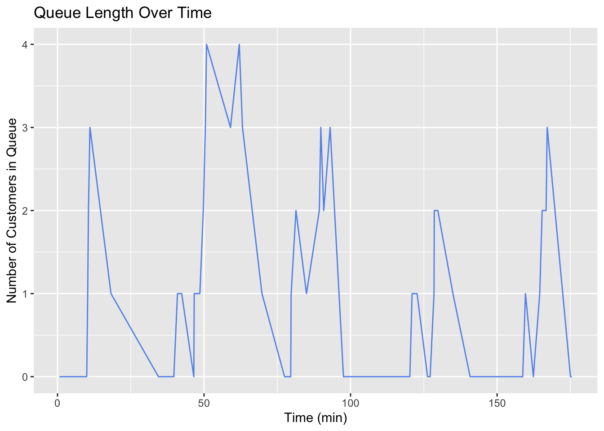

library(tidyverse)R3 Waiting in Line
14:540:384: Simulation Models in IE (Spring 2025)
Abstract
This document shows some basics about how to leverage Quarto to make your life easier and how to create some neat animations.
Questions
Notice this was excluded from the Table of Contents and is not numbered.
Recap
- Observed how simple problems can require simulation
- Set up a Quarto document for R, downloaded data, and generated some visualizations
- Fit various distributions to data and evaluated the best fit
Learning Objectives
- Control output and content of Quarto cells
- Create and run a basic queueing simulation
- Plot results
- Create
1 Quarto Controls
1.1 Front Matter
---
title: "Homework #1"
subtitle: "14:540:384: Simulation Models in IE (Spring 2025)"
author: Daniel Moore
date: 2025-02-11
format:
pdf:
number-sections: true
toc: true
toc-depth: 3
number-depth: 3
df-print: kable
---1.2 Cell Options
#| eval: true # whether to execute code when you render the doc
#| echo: false # decide if code is shown in the document or hidden
#| output: false # should the output of the chunk be displayed
#| warning: false # do you want warnings to be shown in the document
#| error: false # do you want error messages to apepar in the doc?
#| include: false # Catch all for preventing any output1.3 Formulas and references
- create a cross referencable item with
#fig-your-reference-name. Use the appropriate reserved prefix such as:fig,tbl,lst,tip,nte,wrn,imp,cau,thm,lem,cor,prp,cnj,def,exm,exr,sol,rem,eq,sec. - link words in your reference with
-. Do not using blank space, , or underscores_. - Reference your item where you want with
@fig-your-reference-name. - See the Quarto References Guide for how to get different formats of your reference such as: “Figure 1”, “Fig 1”, “1” etc.
The probability density function (pdf) of the exponential distribution is
given below in @eq-exponential-distribution.
$$
p(t) = \lambda e^{-\lambda t}
$$ {#eq-exponential-distribution}The probability density function (pdf) of the exponential distribution is given below in Equation 1.
\[ p(t) = \lambda e^{-\lambda t} \tag{1}\]
2 Bank Queuing Simulation
2.1 Problem Definition
From 4:00 PM to 6:00 PM, customers arrive at Whole Foods to make Amazon returns following a Poisson process with a rate of \(\lambda = \frac{1\ customer}{3\ min}\). A single clerk services the returns at a rate of \(\mu = \frac{1\ customer}{2\ min}\).
What can we say about the:
- Expected wait time?
- Expected total time in the system?
- What is the probability of seeing more than 5 people in line?
- Server Utilization Rate?
2.2 Coding the simulation
- For previous examples, we stepped through time and sampled the random variables, keeping track of the results
- For this example, we will sample all the random variables and perform some logic to determine the results
- This method is more computationally efficient because loops can slow down R and Python
- On the one hand, sampling the random variables this way is more convincing because the memoryless property of the exponential distribution can be a hard concept to grasp
- On the other hand, this method requires a little more reasoning about what is happening in the system after the random variables are sampled
2.2.1 Packages
2.2.2 Parameters
lambda <- 1/3
arrive <- function(n=1) {
rexp(n, rate = lambda )
}
mu <- 1/2
service <- function(n=1) {
rexp(n, rate = mu)
}
t_f <- 3 * 60
# double the number of samples to make sure we will have enough to exceed t_f
samples <- round(2 * t_f * lambda)2.2.3 Generating Arrival and Service Times
data <- tibble(
interarrival_time = arrive(samples),
service_time = service(samples)
)
data <- data |> mutate(
arrival_time = cumsum(interarrival_time)
)
data <- data |> filter(arrival_time <= t_f)
data <- data |> mutate(
service_start_time = 0,
departure_time = 0)2.2.4 Running the Simulation
t_0 <- 0
next_available_time <- t_0
for (i in 1:nrow(data)) {
# Service starts when the server is available
data$service_start_time[i] <- max(data$arrival_time[i], next_available_time)
# Compute departure time
data$departure_time[i] <- data$service_start_time[i] + data$service_time[i]
# Update when the server wœill next be available
next_available_time <- data$departure_time[i]
}2.2.5 Calculating Performance Measures
data <- data |> mutate(
wait_time = service_start_time - arrival_time,
total_time = departure_time - arrival_time
)
data <- data |> mutate(
number_serviced_by_arrival = 0,
L = 0, # number in system, waiting + being serviced. Starting at 0
L_q = 0 # number in queue
)
for (i in 2:nrow(data)) {
this_arrival <- data$arrival_time[i]
data$number_serviced_by_arrival[i] <- sum(data$departure_time[1:i-1] < this_arrival)
}
for (i in 1:nrow(data)) {
data$L[i] <- i - data$number_serviced_by_arrival[i]
data$L_q[i] <- max(0, data$L[i] - 1)
}
head(data)| interarrival_time | service_time | arrival_time | service_start_time | departure_time | wait_time | total_time | number_serviced_by_arrival | L | L_q |
|---|---|---|---|---|---|---|---|---|---|
| 2.878761 | 1.3393035 | 2.878761 | 2.878761 | 4.218065 | 0.0000000 | 1.3393035 | 0 | 1 | 0 |
| 3.241225 | 4.4555033 | 6.119986 | 6.119986 | 10.575490 | 0.0000000 | 4.4555033 | 1 | 1 | 0 |
| 4.243391 | 1.4369964 | 10.363377 | 10.575490 | 12.012486 | 0.2121129 | 1.6491093 | 1 | 2 | 1 |
| 1.059160 | 2.1262271 | 11.422537 | 12.012486 | 14.138713 | 0.5899495 | 2.7161766 | 2 | 2 | 1 |
| 3.888386 | 1.1950125 | 15.310922 | 15.310922 | 16.505935 | 0.0000000 | 1.1950125 | 4 | 1 | 0 |
| 1.570870 | 0.9355287 | 16.881792 | 16.881792 | 17.817320 | 0.0000000 | 0.9355287 | 5 | 1 | 0 |
2.3 Visualizing the Results
2.3.1 Queue Length Histogram
Figure 1 shows the distribution of queue lengths.
data |> ggplot(aes(x=L)) +
geom_histogram(fill="cornflowerblue", color="black") +
labs(
title = "Queue Length Histogram",
x = "Number of Customers in Queue",
y = "Count"
)`stat_bin()` using `bins = 30`. Pick better value with `binwidth`.2.3.2 Waiting Time Histogram
Figure 2 shows the distribution of waiting times.
data |> ggplot(aes(x=wait_time)) +
geom_histogram(fill="cornflowerblue", color="black") +
labs(
title = "Waiting Time Histogram",
x = "Waiting Time (min)",
y = "Count"
)`stat_bin()` using `bins = 30`. Pick better value with `binwidth`.

2.3.3 Waiting Time Density
If we want to view any of these as a probability density we could use stat_density or geom_density. There are a whole host of different plots that you should browse to see what could be good at telling the story you are trying to convey.
data |> ggplot(aes(x = wait_time)) +
geom_density() +
labs(
x = "Time in the System (min)",
y = "Probability Density"
)2.3.4 Queue Length Over Time
Figure 5 shows the queue length over time. However, this isn’t really the full story. What we want to see is how the system changes at each arrival and departure. To do this, we will need to create a new data frame that has an entry for each arrival and departure. Additionally, we’ll want the numbers indicated to be horizontal lines with discontinuities showing when the number changes. Also, this is not exactly the bounds of our simulation because we cutoff our arrivals at \(t_f\), but we have departures after that time. So we should only be plotting up to \(t_f\).
data |> ggplot(aes(x=arrival_time, y=L_q)) +
geom_line(color="cornflowerblue") +
labs(
title = "Queue Length Over Time",
x = "Time (min)",
y = "Number of Customers in Queue"
)

The way these lines are connected give an indication that the queue length is in between two integers at most times. Line plots can be misleading in this way. We need a step plot. Also, we are essentially only sampling the system at a time that somebody arrives. This is why we are seeing big jumps. We should only be seeing the line move up or down one at a time.
Event Log
Basically, we need to unpack the simulation data so that it is event-centric rather than customer-centric.
# all events are either arrivals or departures
# create a dataframe which tracks all events
# combines arrival and departure times into single vector, event time
# for arrivals, event is +1
# for departures, event is -1
events <- data |>
# bringing the data I want to work with
select(arrival_time, departure_time) |>
# turning the data from wide to long
pivot_longer(
cols = everything(),
names_to = "event_type",
values_to = "event_time") |>
# assigning -1 if departure and 1 if arrival
mutate(
event = ifelse(event_type == "arrival_time", 1, -1)) |>
# adding an initial condition of time=0 and 0 customers
bind_rows(tibble(event_time = 0, event = 0)) |>
# removing the event type column
select(-event_type) |>
# sorting the data by event time
arrange(event_time)
# cumulative sum of events
events <- events |> mutate(
L = cumsum(event),
# pmax is vectorized function that looks at each element rather than the entire thing
L_q = pmax(0, L - 1)
)
head(events)| event_time | event | L | L_q |
|---|---|---|---|
| 0.000000 | 0 | 0 | 0 |
| 2.878761 | 1 | 1 | 0 |
| 4.218065 | -1 | 0 | 0 |
| 6.119986 | 1 | 1 | 0 |
| 10.363377 | 1 | 2 | 1 |
| 10.575490 | -1 | 1 | 0 |
We could plot this by adding each column to the plot one at a time, but this can get messy. Instead we’ll do a pivot_longer so that the data is in a better format for plotting multiple series together.
Here I’m pivoting from a wide format (have both an L and an L_q column) to a long format which just has the x-value of time and the y-value of L or L_q. This makes plotting much easier.
events_long <- events |>
pivot_longer(
cols = c(L, L_q),
names_to = "metric",
values_to = "value"
)
head(events_long)| event_time | event | metric | value |
|---|---|---|---|
| 0.000000 | 0 | L | 0 |
| 0.000000 | 0 | L_q | 0 |
| 2.878761 | 1 | L | 1 |
| 2.878761 | 1 | L_q | 0 |
| 4.218065 | -1 | L | 0 |
| 4.218065 | -1 | L_q | 0 |
At last, Figure 5 shows a complete plot of the number of customers in line and the number in the system at each moment.
events_long |> ggplot(aes(x = event_time, y = value, color=metric)) +
xlim(0, t_f) +
geom_step(direction = "hv") +
labs(
title = "Customer Count Over Time",
x = "Time (min)",
y = "Customers"
) +
theme_minimal()3 Animation
3.1 Concepts
- Data in long format: Structure data with one row per observation and a time variable for animations (use pivot_longer() for multiple metrics).
- Time variable for transitions: Use a continuous variable (e.g., event_time) to animate data over time with transition_reveal() or transition_states().
- Compatible geom layers: Use geom_step(), geom_line(), or geom_point() to animate time-series data, ensuring smooth transitions.
3.2 Code
library(gganimate)
library(gifski)p <- events_long |>
ggplot(aes(x = event_time, y = value, color = metric)) +
geom_step(size = 1.2) +
labs(x = "Time", y = "Customers", color = "Metric") +
theme_minimal() +
transition_reveal(event_time)
# Animate and save as GIF
anim <- animate(p, renderer = gifski_renderer(), width = 800, height = 600, duration = 5)
anim_save("returns_animation.gif", animation = anim)
anim4 Analytical Solution
These metrics are the typical things we want to know about queues. How long will I wait? What’s the probability of the line having more than 4 people? How long will I be in this line before it’s my turn? etc.
They are derived from algebraic manipulations of the probability density functions. They are specific for an \(M/M/1\) queue which is “Kendall’s Notation” for a queue with:
- M: Exponential distributed Arrival Time (typically \(\lambda\))
- M: Exponentially distributed Service Time (typically $)
- 1: A single line, single server
- Implied is a first-in/first-out (FIFO) “service discipline”
What other service disciplines can you imagine? What settings?
\[ Server\ Utilization, \rho = \frac{\lambda}{\mu} = \frac{1/3}{1/2} = \frac{2}{3} = 66.67\% \tag{2}\]
\[ Expected\ Number\ in\ the\ System,\ L = \frac{\lambda}{\mu - \lambda} = \frac{1/3}{1/2 - 1/3} = 2 \tag{3}\]
\[ Expected\ Number\ in\ the\ Queue,\ L_q = \frac{\lambda^2}{\mu(\mu - \lambda)} = \frac{(1/3)^2}{(1/2)(1/2)} = \frac{2}{9} = 0.2222 \tag{4}\]
\[ Expected\ time\ in\ the\ System,\ W = \frac{1}{\mu - \lambda} = \frac{1}{1/2 - 1/3} = 6 \tag{5}\]
\[ Expected\ time\ in\ the\ Queue,\ W_q = \frac{\lambda}{\mu(\mu - \lambda)} = \frac{1/3}{(1/2)(1/2)} = 4 \tag{6}\]
\[ Probability\ of\ empty\ system, P_0 = 1 - \rho = 1 - \frac{2}{3} = \frac{1}{3} = 33.33\% \tag{7}\]
\[ Probability\ of\ n\ customers\ in\ the\ System,\ P(n) = (1 - \rho)\rho^n = \frac{1}{3}\left(\frac{2}{3}\right)^n \tag{8}\]
5 Simulation and Analytical Comparison
To be Completed
6 Conclusion
6.1 Potential Complications?
- What if there is a limited amount of space and if the line is too long, customers just leave?
- Service times follow different distributions?
- More than one line? More than one server?
- Priority line with different logic? Maybe a commerical customer with 12 packages gets serviced as soon as a server is available?
6.2 Summary
- We simulated an \(M/M/1\) queuing system by sampling arrival and service times
- We obtained system state measurements by executing logic on the samples
- Manipulated the data into an event time series
- Created and animated
geom_stepplots usingggplot,gganimate, andgifski - Compared analytical system metrics to those we obtained from the simulation.